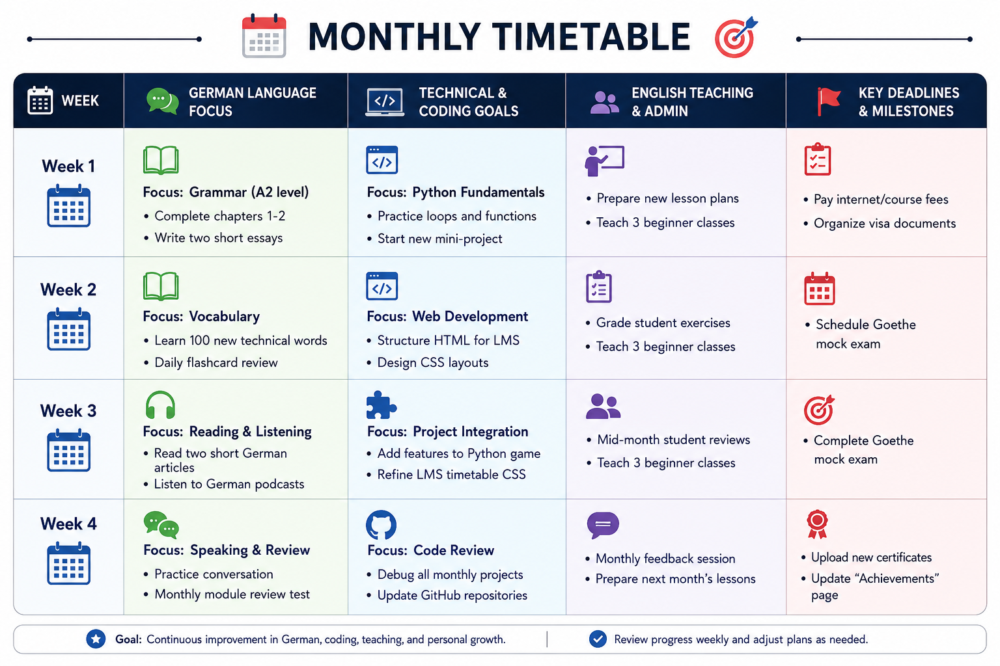

Timetable:
While my weekly timetable keeps my daily routine organized, this monthly overview helps me track my bigger goals. I use this section to plan out major targets, like completing a specific chapter in my German course, finishing a larger Python project, or organizing my university documents. Looking at my progress month by month ensures I am constantly moving forward and staying on target for my ultimate goal of studying in Germany.
